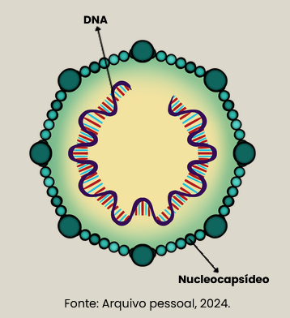

Capítulo 2 - Vírus
2.1 Coronaviridae
Viroses de maior importância para medicina veterinária:
• Coronavírus Canino Entérico (CCoV);
• Peritonite Infecciosa Equina (PIF).
Cornavírus canino
O coronavírus canino mais comum é o Coronavírus Canino Entérico (CCoV), que afeta o trato gastrointestinal dos cães, causando sintomas como diarreia, vômitos e, ocasionalmente, desidratação.
Características:
• Ciclo: Lítico;
• Localização: Cosmopolita;
• Vacinação: presente;
• Notificação: ausente.
O CCoV é altamente contagioso entre os cães e é transmitido principalmente por meio do contato direto com fezes contaminadas.

É importante observar que o coronavírus canino não é o mesmo que o coronavírus humano SARS-CoV-2, que causa a COVID-19.
Os cães podem contrair outros tipos de coronavírus, mas não há evidências de que os cães desempenhem um papel significativo na propagação do vírus que causa a COVID-19 em humanos.
Peritonite Infecciosa Felina (PIF)
A Peritonite Infecciosa Felina (PIF) é uma doença viral complexa e muitas vezes fatal que afeta gatos.
Características:
• Ciclo: Lítico;
• Localização: Cosmopolita;
• Vacinação: ausente;
• Notificação: ausente;

A PIF ocorre quando o vírus sofre mutação no organismo do gato, transformando-se em uma forma patogênica capaz de causar a doença.
Os sintomas podem variar amplamente e incluem perda de peso, febre, letargia, icterícia e distúrbios gastrointestinais.
A transmissão do coronavírus felino ocorre principalmente por contato direto entre gatos, especialmente em ambientes com grande concentração de felinos, como abrigos ou criadouros.
A predisposição genética, o estresse e o sistema imunológico enfraquecido são fatores que podem influenciar o desenvolvimento da PIF. Infelizmente, não há cura para a PIF, e o tratamento é direcionado ao alívio dos sintomas.
2.2 Flaviridae
Viroses de maior importância para medicina veterinária:
• Diarreia Viral Bovina (BVD);
• Febre Amarela;
• Peste suína;
Diarreia Viral Bovina (BVD)
A Diarreia Viral Bovina (BVD) é uma doença infecciosa que afeta bovinos em todo o mundo, causada pelo vírus da diarreia viral bovina (BVDV), que pertence à família Flaviviridae.
Características:
• Ciclo: Lítico;
• Localização: Cosmopolita;
• Vacinação: presente;
• Notificação: presente;
A transmissão da BVD ocorre principalmente através do contato direto entre animais infectados, seja por meio de secreções nasais, saliva, fezes ou urina.

A infecção também pode ser transmitida verticalmente, de uma vaca gestante infectada para o feto em desenvolvimento.
Os animais persistentemente infectados, que resultam de infecções durante a gestação, são uma fonte significativa de disseminação do vírus.
Os sintomas da BVD variam e podem incluir febre, depressão, perda de apetite, diarreia e problemas respiratórios. Além disso, a infecção por BVD durante a gestação pode levar a abortos, nascimentos de bezerros fracos e anomalias congênitas.
Febre Amarela
A febre amarela é uma doença viral aguda que afeta humanos e primatas, causada pelo vírus da febre amarela, da família Flaviridae.
Características:
• Ciclo: Lítico;
• Localização: Cosmopolita;
• Vacinação: presente;
• Notificação: presente;
A transmissão da febre amarela ocorre principalmente através da picada de mosquitos infectados, especialmente do gênero Aedes na área urbana e Haemagogus e Sabethes em ambientes silvestres.

Os seres humanos são considerados os principais hospedeiros, e os mosquitos atuam como vetores na transmissão entre humanos e primatas.
A febre amarela tem uma distribuição geográfica específica, sendo endêmica em algumas regiões tropicais e subtropicais da África e da América do Sul.
A vacinação é a principal medida de prevenção contra a febre amarela em áreas de risco, e a eliminação de criadouros de mosquitos também desempenha um papel importante na redução da propagação do vírus.
Peste suína
A peste suína é um vírus da família Flaviviridae, também conhecida como cólera dos porcos.
Características:
• Ciclo: Lítico;
• Localização: Cosmopolita;
• Vacinação: presente;
• Notificação: ausente;

Os sintomas incluem febre, letargia, perda de apetite, vômitos, diarreia e hemorragias nas mucosas, com alta mortalidade em casos agudos.
Altamente contagiosa e é transmitida principalmente por contato direto entre suínos, bem como por meio de fômites contaminados.
2.3 Herpesviridae
Viroses de maior importância para medicina veterinária:
• Doença de Aujezky;
• Doença de Marek;
• Herpesvírus Bovino (BoHV);
• Herpesvírus felino;
Doença de Aujeszky
A Doença de Aujeszky, também conhecida como pseudoraiva, é uma enfermidade viral que afeta suínos, causada pelo vírus do herpes suíno (SuHV-1).
Características:
• Ciclo: Lítico;
• Localização: Cosmopolita;
• Vacinação: presente;
• Notificação: presente.
Essa doença é altamente contagiosa e pode ter impactos significativos na produção suína.

O vírus da pseudoraiva provoca uma variedade de sintomas em suínos, incluindo febre, dificuldades respiratórias, incoordenação motora, convulsões e, em muitos casos, a morte dos animais.
Além disso, o vírus pode causar complicações reprodutivas, resultando em abortos e nascimentos de leitões fracos.
A transmissão da Doença de Aujeszky ocorre principalmente pelo contato direto entre suínos infectados, seja por meio de secreções respiratórias ou de fluidos corporais contaminados.
A disseminação do vírus pode também ocorrer através de fômites, como equipamentos agrícolas e roupas contaminadas.
Doença de Marek
A Doença de Marek é uma doença viral altamente contagiosa que afeta aves, principalmente galinhas e perus.
Características:
• Ciclo: Lítico;
• Localização: Cosmopolita;
• Vacinação: presente;
• Notificação: presente;
Causada pelo vírus da Doença de Marek (MDV), um herpesvírus, essa enfermidade é caracterizada por afetar o sistema nervoso, causando tumores nos nervos periféricos, na pele e em órgãos internos.

A transmissão da Doença de Marek ocorre através de partículas virais liberadas pelas aves doentes e contaminam o ambiente, incluindo poeira e penas.
A infecção geralmente ocorre em aves jovens, e o vírus pode permanecer latente nos nervos por longos períodos sem causar sintomas visíveis.
Os sinais clínicos da Doença de Marek podem variar, mas frequentemente incluem paralisia das pernas, asas e pescoço, bem como mudanças no padrão de penas.
A doença pode ter impactos significativos na produção avícola, resultando em perdas econômicas devido à mortalidade e à redução na qualidade das aves.
Herpesvírus Bovino (BoHV)
Refere-se a um grupo de vírus pertencentes à família Herpesviridae que afeta bovinos. Existem diferentes tipos de herpesvírus bovino, sendo o BoHV-1 e o BoHV-5 os mais notáveis.
Características:
• Ciclo: Lítico e lisogênico;
• Localização:Cosmopolita;
• Vacinação: presente;
• Notificação: presente;
A infecção por herpesvírus bovino pode resultar em diversas manifestações clínicas, afetando principalmente o sistema respiratório e reprodutivo do gado.

O BoHV-1 é conhecido por causar infecções respiratórias, como rinotraqueíte infecciosa bovina (IBR), que se manifesta através de sintomas como febre, corrimento nasal, tosse e conjuntivite. Além disso, o vírus pode causar distúrbios reprodutivos, como aborto e infertilidade.
Por sua vez, o BoHV-5 está associado à meningoencefalite infecciosa bovina (MIB), uma doença neurológica que afeta o sistema nervoso central dos bovinos, podendo levar a sinais clínicos graves, como depressão, cegueira, incoordenação e convulsões.
Herpesvírus Felino
O Herpesvírus Felino (FHV-1) é um vírus que afeta gatos e é uma das principais causas de infecções respiratórias em felinos domésticos.
Características:
• Ciclo: Lítico e lisogênico;
• Localização: Cosmopolita
• Vacinação: presente;
• Notificação: ausente;
Pertencente à família Herpesviridae, o FHV-1 é altamente contagioso e pode causar uma variedade de sintomas, sendo mais comumente associado a infecções do trato respiratório superior.

A transmissão do Herpesvírus Felino ocorre por contato direto entre gatos, especialmente através de secreções nasais e oculares. Gatos infectados podem eliminar o vírus no ambiente, tornando possível a contaminação de objetos e superfícies.
Os sintomas da infecção por Herpesvírus Felino incluem espirros, corrimento nasal, conjuntivite, febre, falta de apetite e ulcerações na língua. Em casos mais graves, a infecção pode levar a complicações oculares, como úlceras na córnea.
Embora a infecção por FHV-1 não tenha uma cura definitiva, os sintomas podem ser tratados e controlados.
2.4 Orthomyxoviridae
Virose de maior importância para medicina veterinária:
• Influenza.
Influenza
A influenza, comumente conhecida como gripe, é uma doença respiratória aguda.
Características:
• Ciclo: Lítico e lisogênico;
• Localização: Cosmopolita;
• Vacinação: presente;
• Notificação: presente;
Essa infecção viral afeta seres humanos e vários animais, sendo conhecida por sua capacidade de causar surtos sazonais e, ocasionalmente, pandemias mais extensas.

Os vírus influenza pertencem à família Orthomyxoviridae.
Os sintomas comuns da gripe incluem febre, dores musculares, dor de cabeça, fadiga, tosse e congestão nasal.
A transmissão ocorre principalmente por meio de gotículas respiratórias produzidas por pessoas infectadas durante a fala, tosse ou espirro. A gripe pode se espalhar rapidamente, especialmente em ambientes fechados e populações densas.
2.5 Papilomaviridae
Viroses de maior importância para medicina veterinária:
• Papilomavírus bovino;
• Papilomavírus canino;
Papilomavírus bovino
O Papilomavírus Bovino (BPV) é um vírus que afeta bovinos, causando infecções nas células epiteliais da pele e mucosas.
Características:
• Ciclo: Lítico e lisogênico;
• Localização: Cosmopolita
• Vacinação: ausente;
• Notificação: ausente;
Essas infecções podem resultar no desenvolvimento de lesões verrucosas, conhecidas como papilomas, que podem variar em tamanho e aparência.

Existem diferentes tipos de Papilomavírus Bovino, sendo o BPV-1, BPV-2 e BPV-4 os mais comuns. Esses tipos específicos de vírus estão associados a diferentes formas de papilomatose em bovinos.
A transmissão do Papilomavírus Bovino geralmente ocorre por contato direto entre animais infectados e sadios, principalmente em áreas onde há lesões presentes. Fatores como estresse, abrasões na pele e condições ambientais favoráveis podem aumentar a susceptibilidade dos bovinos à infecção.
Os papilomas podem surgir em diversas partes do corpo, incluindo pele, boca, língua e trato digestivo, causando desconforto e, em alguns casos, prejudicando a alimentação.
Em geral, as lesões regredirão naturalmente ao longo do tempo, mas em casos mais graves, podem ser necessárias intervenções veterinárias.
Papilomavírus canino
O Papilomavírus canino (CPV) refere-se a uma família de vírus que afeta cães, causando lesões epiteliais, conhecidas como papilomas ou verrugas, na pele e nas membranas mucosas.
Características:
• Ciclo: Lítico e lisogênico;
• Localização: Cosmopolita;
• Vacinação: ausente;
• Notificação: ausente;
Esses papilomas são geralmente benignos, mas em alguns casos, podem se tornar malignos.

Existem diferentes tipos de Papilomavírus canino, cada um associado a certos tipos de lesões.
A transmissão do Papilomavírus canino ocorre geralmente por contato direto com cães infectados ou com objetos contaminados.
Os cães mais jovens, em particular, são suscetíveis a desenvolver verrugas, e o sistema imunológico desempenha um papel crucial na resposta e na resolução da infecção.
2.6 Paramyxoviridae
Viroses de maior importância para medicina veterinária:
• Cinomose;
• Doença de Newcaslte;
Cinomose
A cinomose é uma doença viral altamente contagiosa que afeta principalmente cães, embora também possa atingir outros membros da família dos canídeos, como raposas e lobos. O vírus responsável pela cinomose é o vírus da cinomose canina (CDV), que pertence à família Paramyxoviridae.
Características:
• Ciclo: Lítico;
• Localização: Cosmopolita;
• Vacinação: presente;
• Notificação: presente;
Esta enfermidade afeta diversos sistemas do organismo, incluindo o respiratório, o gastrointestinal e o nervoso.

A transmissão da cinomose ocorre principalmente através do contato direto com secreções respiratórias ou urina de animais infectados.
Os sintomas iniciais incluem febre, secreção nasal, tosse e falta de apetite, progredindo para estágios mais avançados com sinais neurológicos, como convulsões, descoordenação e paralisia.
Infelizmente, a cinomose pode ser fatal e não possui cura específica, tornando a prevenção por meio da vacinação crucial para proteger os animais de estimação.
Doença de Newcastle
A Doença de Newcastle é uma doença viral altamente contagiosa que afeta aves, principalmente aves domésticas como galinhas, perus e patos.
Características:
• Ciclo: Lítico;
• Localização: Cosmopolita;
• Vacinação: presente;
• Notificação: presente;
Causada pelo vírus da Doença de Newcastle (NDV), um paramixovírus, que pode variar a gravidade, desde formas brandas até variantes mais virulentas que causam alta mortalidade nas aves.

A transmissão da Doença de Newcastle ocorre através do contato direto com aves infectadas, bem como por meio de excreções contaminadas, como fezes e secreções respiratórias.
O vírus pode se disseminar rapidamente em populações de aves densamente povoadas, como as encontradas em granjas avícolas.
Os sintomas da Doença de Newcastle incluem sinais respiratórios, como espirros, tosse e corrimento nasal, bem como sinais nervosos, como torcicolo, tremores e convulsões.
Em casos graves, a doença pode levar à morte das aves afetadas.
2.7 Parvoviridae
Viroses de maior importância para medicina veterinária:
• Panleuucopenia felina;
• Parvovírus canino;
• Parvovírus suíno;
Panleucopenia felina
A Panleucopenia Felina é uma doença viral altamente contagiosa que afeta gatos.
Características:
• Ciclo: Lítico;
• Localização: Cosmopolita;
• Vacinação: presente;
• Notificação: ausente;
O agente causador é o vírus da panleucopenia felina (FPV), que pertence à família Parvoviridae.

A doença é caracterizada por uma rápida replicação do vírus em tecidos de rápida divisão celular, como a medula óssea, intestino delgado, linfonodos e, ocasionalmente, o cérebro.
Os sintomas da panleucopenia felina incluem febre, depressão, falta de apetite, vômitos e diarreia grave.
A doença pode ser especialmente perigosa para felinos não vacinados, gestantes e imunossuprimidos.
A transmissão ocorre principalmente através do contato direto com fluidos corporais contaminados ou objetos infectados, como tigelas de comida, caixas de areia e superfícies.
Parvovírus canino
O parvovírus canino, conhecido como parvovirose, é uma doença viral altamente contagiosa que afeta cães, porém algumas mutações afetam também os felinos, especialmente filhotes e cães não vacinados.
Características:
• Ciclo: Lítico;
• Localização: Cosmopolita;
• Vacinação: presente;
• Notificação: ausente;
O agente etiológico é o vírus da parvovirose canina (CPV), pertencente à família Parvoviridae.

Essa doença é reconhecida por sua rápida disseminação e por causar sintomas graves, principalmente gastrointestinais.
A transmissão do parvovírus ocorre principalmente através do contato direto com fezes contaminadas.
Os sintomas comuns incluem vômitos, diarreia grave, desidratação e depressão. Filhotes são particularmente suscetíveis, e a doença pode ser fatal se não for tratada adequadamente.
A prevenção é fundamental, e a vacinação é uma maneira eficaz de proteger os cães contra a parvovirose.
Parvovírus suíno
O Parvovírus Suíno, também conhecido como Parvovirose Suína, é uma doença viral que afeta suínos, causando perdas significativas na indústria suína em todo o mundo.
Características:
• Ciclo: Lítico;
• Localização: Cosmopolita;
• Vacinação: presente;
• Notificação: ausente;
O agente etiológico é o vírus da parvovirose suína (PPV), que pertence à família Parvoviridae.

Diferentemente do parvovírus canino, que afeta cães, o PPV causa principalmente problemas reprodutivos em suínos.
A infecção pelo Parvovírus Suíno resulta em perdas reprodutivas, como abortos, natimortos e nascimento de leitões fracos.
A transmissão ocorre principalmente através da ingestão de material contaminado, como fezes, urina ou saliva infectada.
Suínos infectados geralmente não exibem sintomas clínicos óbvios, o que torna a detecção da doença desafiadora.
No entanto, as consequências podem ser graves, afetando diretamente a produtividade das criações.
2.8 Picornaviridae
Viroses de maior importância para medicina veterinária:
• Estomatite Vesicular Bovina;
• Febre Aftosa.
Estomatite Vesicular Bovina
A Estomatite Vesicular Bovina (EVB) é uma doença viral que afeta principalmente bovinos, embora também possa afetar outros animais de casco fendido, como suínos e ovinos.
Características:
• Ciclo: Lítico;
• Localização: Regiões tropicais e subtropicais;
• Vacinação: presente;
• Notificação: presente;
A doença é causada pelo vírus da estomatite vesicular, que pertence à família Picornaviridae e ao gênero Vesiculovirus. A EVB é caracterizada pelo aparecimento de vesículas ou bolhas na boca, lábios, língua, cascos e tetos de bovinos.

Essas vesículas podem causar dor, salivação excessiva, perda de apetite e, em alguns casos, claudicação devido à presença das lesões nos cascos.
A transmissão da estomatite vesicular ocorre principalmente por contato direto entre animais infectados e sadios, bem como através de fômites contaminados, como utensílios de alimentação e equipamentos de manejo.
Além disso, insetos, especialmente mosquitos e moscas, podem desempenhar um papel na disseminação do vírus. Embora a estomatite vesicular seja geralmente uma doença de baixa mortalidade, ela pode causar perdas econômicas significativas devido à redução na produção de leite, perda de peso e desvalorização de animais afetados.
Febre Aftosa
A febre aftosa é uma doença viral altamente contagiosa que afeta animais de casco fendido, principalmente bovinos, ovinos, caprinos e suínos.
Características:
• Ciclo: Lítico;
• Localização: Cosmopolita;
• Vacinação: presente;
• Notificação: presente;
Causada pelo vírus da febre aftosa, pertencente à família Picornaviridae, essa enfermidade é conhecida por causar febre, vesículas nas mucosas orais, patas e úberes, resultando em graves prejuízos econômicos na produção pecuária.

A transmissão da febre aftosa ocorre principalmente pelo contato direto entre animais infectados, mas também pode ocorrer por meio de produtos contaminados, como carne, leite, saliva e excrementos. Além disso, o vírus pode ser transportado pelo vento, facilitando sua propagação a longas distâncias.
Os sintomas clínicos incluem salivação excessiva, claudicação devido à dor nas patas, perda de apetite, febre e, em casos graves, a formação de vesículas na boca, língua, cascos e tetas.
A doença não apenas compromete o bem-estar animal, mas também resulta em restrições ao comércio internacional de animais e seus produtos.
2.9 Poxviridae
Virose de maior importância para medicina veterinária:
• Bouba aviária;
Bouba Aviária
A Bouba Aviária, também conhecida como Varíola Aviária, é uma doença viral que afeta aves, incluindo galinhas, perus e outras espécies. Causada por diferentes vírus da família Poxviridae.
Características:
• Ciclo: Lítico;
• Localização: Cosmopolita;
• Vacinação: presente;
• Notificação: presente;
Sendo caracterizada pelo aparecimento de lesões cutâneas e mucosas, podendo afetar a pele, olhos, bico e trato respiratório das aves.

A transmissão ocorre principalmente através do contato direto entre aves infectadas e saudáveis, bem como por meio de mosquitos e outros artrópodes vetores.
As lesões podem variar de pequenas pápulas a grandes nódulos, causando desconforto, dificuldades respiratórias e, em casos mais graves, resultando na diminuição da produção de ovos e até mesmo na mortalidade das aves.
A Bouba Aviária é uma preocupação significativa na avicultura, pois pode impactar negativamente a produção de carne e ovos, resultando em perdas econômicas para a indústria avícola.
2.10 Reoviridae
Virose de maior importância para medicina veterinária:
• Rotavirose.
Rotavirose
A rotavirose é uma doença viral que afeta diversas espécies de animais, incluindo aves, mamíferos e humanos.
Características:
• Ciclo: Lítico;
• Localização: Cosmopolita
• Vacinação: presente;
• Notificação: presente;
Na medicina veterinária, a rotavirose é particularmente relevante em animais jovens, especialmente em criações de gado, suínos e aves, onde pode causar surtos de diarreia aguda e desidratação.

O vírus da rotavirose pertence à família Reoviridae e é classificado em diferentes grupos e subgrupos, sendo capaz de infectar células do epitélio intestinal, resultando em danos significativos ao trato gastrointestinal.
A transmissão ocorre principalmente por via fecal-oral, e os animais podem contrair a doença ao ingerir água ou alimentos contaminados.
Os sintomas da rotavirose em animais jovens incluem diarreia líquida, desidratação, letargia, perda de apetite e, em casos graves, mortalidade.
A gravidade da doença pode variar dependendo da idade dos animais, do tipo de hospedeiro e da virulência da cepa do vírus.
2.11 Retroviridae
Viroses de maior importância para medicina veterinária:
• Anemia Infecciosa Equina;
• Leucose Bovina;
• Vírus da Leucemia felina (FeLV);
• Vírus da Imunodeficiência Felina (FIV);
Anemia Infecciosa Equina (AIE)
A Anemia Infecciosa Equina (AIE) é uma doença viral que afeta cavalos, asininos e mulas, causada pelo Vírus da Anemia Infecciosa Equina (EIAV), da família das retrovírus, também conhecida como “febre dos pântanos” e “AIDS equina”.
Características:
• Ciclo: Lítico e Lisogênico;
• Localização: Brasil;
• Vacinação: ausente;
• Notificação: presente;
Esta enfermidade é caracterizada por uma anemia crônica e pode variar de uma forma assintomática a uma forma aguda e grave, com complicações potencialmente fatais.

A principal forma de transmissão da AIE é através de insetos hematófagos, como mosquitos, que se alimentam do sangue de um equino infectado e, subsequentemente, picam outro animal, transmitindo o vírus.
Além disso, a transmissão pode ocorrer por meio de instrumentos contaminados, como agulhas e seringas, ou através do contato direto com sangue infectado.
Os sintomas da AIE podem incluir febre intermitente, perda de peso, fraqueza, anemia, icterícia e, em casos graves, hemorragias. Não há cura para a AIE, e os cavalos infectados geralmente se tornam portadores crônicos do vírus.
Leucose bovina
A Leucose Bovina, também conhecida como Leucemia Enzoótica Bovina, é uma doença viral que afeta bovinos. O agente causador é o vírus BLV, que pertence à família Retroviridae.
Características:
• Ciclo: Lítico e lisogênico;
• Localização: Cosmopolita;
• Vacinação: ausente;
• Notificação: presente;
A infecção por BLV é caracterizada por causar distúrbios linfoproliferativos, incluindo a formação de tumores linfoides e, eventualmente, resultando em uma condição conhecida como leucose.

A transmissão do BLV geralmente ocorre através do contato direto entre animais, principalmente através do compartilhamento de agulhas, instrumentos cirúrgicos contaminados e durante a amamentação.
O vírus pode também ser transmitido verticalmente, da mãe para o bezerro durante o parto ou através do leite. A maioria dos animais infectados com o BLV não apresenta sintomas imediatos, e a leucose pode permanecer latente por longos períodos.
No entanto, em alguns casos, a infecção pode levar ao desenvolvimento de linfomas, comprometendo a saúde e a produtividade do rebanho.
Vírus da Leucemia Felina (FeLV)
O Vírus da Leucemia Felina (FELV) é um retrovírus que afeta gatos, sendo uma das principais causas de doenças graves e fatais nesses animais.
Características:
• Ciclo: Lítico e lisogênico;
• Localização: Cosmopolita;
• Vacinação: presente;
• Notificação: presente;
A leucemia felina é uma infecção crônica que pode levar a uma série de complicações, incluindo doenças do sistema imunológico, anemia, linfomas e distúrbios hematopoiéticos.

A transmissão do FELV ocorre principalmente através do contato direto entre gatos, seja por meio de mordidas, lambeduras ou compartilhamento de tigelas de comida e caixas de areia.
Gatos jovens e gatos que vivem ao ar livre têm maior risco de contrair o vírus.
Os sintomas da leucemia felina podem variar e incluem perda de peso, letargia, anemia, problemas respiratórios, infecções recorrentes e aumento dos gânglios linfáticos. No entanto, alguns gatos podem ser portadores assintomáticos.
Vírus da Imunodeficiência Felina (FIV)
O Vírus da Imunodeficiência Felina (FIV) é um retrovírus que afeta gatos, comprometendo o sistema imunológico e tornando os animais mais suscetíveis a infecções oportunistas.
Características:
• Ciclo: Lítico e lisogênico;
• Localização: Cosmopolita;
• Vacinação: ausente;
• Notificação: ausente;
O FIV é semelhante ao vírus da imunodeficiência humana (HIV) em humanos, mas é específico para felinos. E como seu semelhante, atualmente, não há cura para a infecção por FIV.

A transmissão do FIV ocorre principalmente por meio de mordidas profundas durante brigas entre gatos territorialmente agressivos. A transmissão vertical da mãe para os filhotes também é possível, seja durante a gestação, o parto ou a amamentação.
Os gatos infectados pelo FIV podem não apresentar sintomas imediatos, e muitos permanecem clinicamente saudáveis durante anos. No entanto, ao longo do tempo, o sistema imunológico enfraquecido pode levar a uma variedade de infecções secundárias, bem como a condições mais graves, como doenças renais e câncer.
A conscientização sobre o FIV é essencial para promover a testagem, a prevenção e o manejo adequado, contribuindo para o bem-estar dos gatos domésticos e de comunidades felina.
2.12 Rhabdoviridae
Virose de maior importância para medicina veterinária:
• Raiva.
Raiva
A raiva é uma doença viral aguda e fatal que afeta mamíferos, incluindo seres humanos.
Características:
• Ciclo: Lítico;
• Localização: Cosmopolita
• Vacinação: presente;
• Notificação: presente;
Causada pelo vírus da raiva, um Lyssavirus da família Rhabdoviridae, a doença é transmitida principalmente pela mordida ou arranhão de animais infectados, sendo os morcegos os principais vetores.

O vírus da raiva ataca o sistema nervoso central, levando a sintomas que incluem agitação, ansiedade, alucinações, dificuldade de deglutição, convulsões e paralisia. Uma vez que os sintomas aparecem, a raiva é quase sempre fatal, tornando-a uma das doenças mais temidas.
A prevenção da raiva envolve a vacinação de animais domésticos, como cães e gatos, e a pronta administração de tratamento pós-exposição em casos de mordidas ou arranhões suspeitos de animais infectados. Além disso, o controle da população de morcegos e a educação pública sobre medidas preventivas são essenciais para reduzir a incidência da doença.
A raiva é uma zoonose, ou seja, pode ser transmitida de animais para humanos. Portanto, a conscientização sobre os riscos, a importância da vacinação e o tratamento imediato em caso de exposição são fundamentais para prevenir a disseminação dessa grave doença.
2.13 Príon
Virose de maior importância para medicina veterinária:
• Encefalite Espongiforme Bovina (Mal da Vaca Louca);
Mal da Vaca Louca
Mal da Vaca Louca, cientificamente conhecido como Encefalopatia Espongiforme Bovina (EEB), é uma doença neurodegenerativa que afeta bovinos, causado por um príon.
Características:
• Genoma: ausente;
• Ciclo: ausente;
• Localização: Cosmopolita
• Vacinação: ausente;
• Notificação: ausente;
Essa condição é caracterizada pela formação de proteínas anormais, chamadas príons, que se acumulam no cérebro e no sistema nervoso central dos animais, levando a danos progressivos.

A EEB está associada à ingestão de rações contaminadas com partículas do sistema nervoso central de animais infectados. Embora a transmissão mais comum seja alimentar, também é possível a transmissão vertical, da mãe para o filhote.
A doença tem uma longa incubação, podendo levar anos até que os sintomas se manifestem. Os sintomas da EEB incluem mudanças de comportamento, dificuldades motoras, perda de peso, dificuldades de locomoção e, eventualmente, a morte do animal.
A descoberta da EEB levou a importantes medidas de controle e restrições no comércio de produtos derivados de bovinos em muitos países.
O controle eficaz da EEB é crucial não apenas para a saúde do gado, mas também para proteger a segurança alimentar e a saúde pública, uma vez que a EEB está associada a formas variantes da doença de Creutzfeldt-Jakob em seres humanos.
Planilha de Características